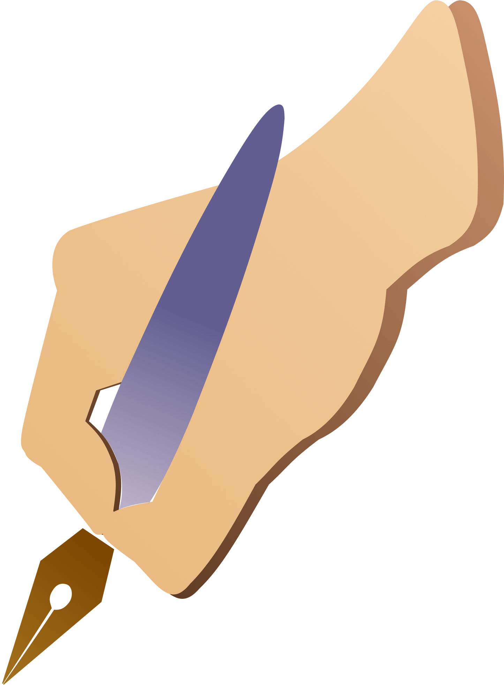

"Quando entrou na livraria, porém, tinha um ar de preocupada, como se no cinema, quase vizinho, não tivesse deixado um pedaço de si mesma. Isabel procurou as estantes do fundo, onde sempre tem menos gente e menor luz. Ao acaso, uma edição luxuosa: Fernando Pessoa. Bateu os olhos e incluiu a si mesma no poema Autopsicografia:
A Isabel é fingidora, finge tão completamente que chega a fingir que é amor o amor que deveras sente..."
Anaklusmos.
"Simão Bacamarte refletiu ainda um instante, e disse:‐ Suponho o espírito humano uma vasta concha, o meu fim, Sr. Soares, é ver se posso extrair a pérola, que é a razão; por outros termos, demarquemos definitivamente os limites da razão e da loucura. A razão é o perfeito equilíbrio de todas as faculdades; fora daí insânia, insânia e insânia."
"Estamos a destruir o planeta e o egoísmo de cada geração não se preocupa em perguntar como é que vão viver os que virão depois. A única coisa que importa é o triunfo do agora. É a isto que eu chamo a cegueira da razão."
"A solidão havia selecionado suas memórias e incinerado os amontoados entorpecentes de lixo nostálgico que a vida havia acumulado em seu coração e purificado, ampliado e eternizado os outros, os mais amargos."
Textos
17/07/2022
Aonde quer que eu vá, as pessoas me perguntam sobre você. Todos estão muito preocupados, e não sem razão. Muita coisa tem acontecido e a terapia tem me ajudado a perceber muitas coisas. Sinto muito pela forma como eu agi da última vez. Você é uma grande parte de mim e só agora estou aprendendo a melhor forma de lidar com as coisas. Nada nunca foi exatamente fácil pra mim. No entanto, eu decidi não desistir. Mais que isso, eu decidi mudar. Decidi que vou prestar mais atenção em mim; nas coisas que me fazem bem; no que é importante pra mim. Decidi parar de atentar contra mim mesma; parar de me deixar desamparada e, ao invés disso, realmente agir de forma a manter aquilo que é importante pra mim. Tudo isso só foi possível porque, pela primeira vez, estou conseguindo enxergar para além da minha obcessão e voltando toda essa atenção pra mim. Essa é só a primeira parte de todo um processo. Não é nem um pouco fácil, mas decidi que vou me manter nesse caminho, até que um dia ele se torne tão natural quanto o caminho de volta ao lar. A questão é que você me ajudou a encontrar esse caminho e me mostrou uma parte tão grande e tão boa de mim que eu nem imaginava estar aqui. "Não queime as páginas", essa frase tem me ajudado a agir de forma a manter o que é importante pra mim. Você é importante pra mim e eu não vou queimar essa página. Eu vou manter você e escreverei novas páginas sobre essa história. Seu plano de se isolar do mundo só tem uma falha: você cativou o amor de pessoas que jamais desistiriam de você!